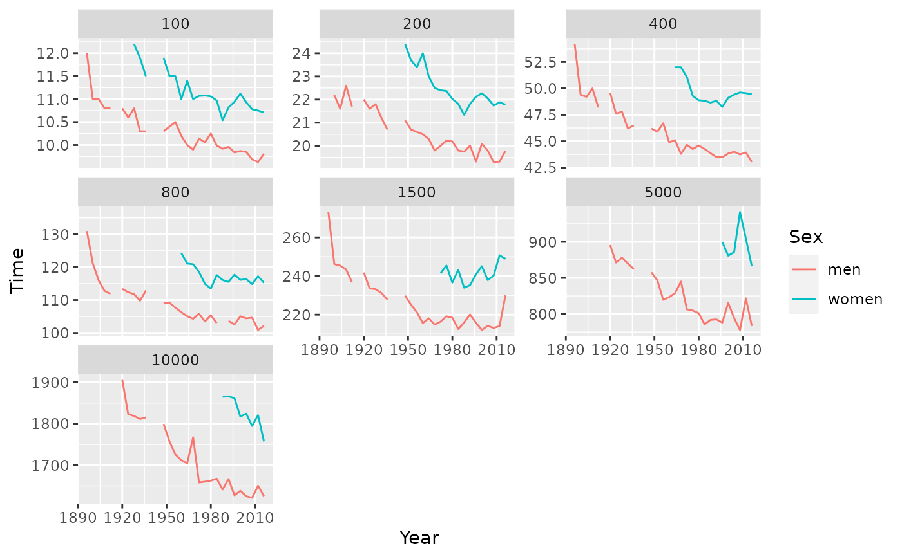

olympic_running.Rdolympic_running is a quadrennial tsibble with one value:
| Time: | |
| Fastest running time for the event |
Time series of class tsibble
https://www.olympic.org/athletics
The event is identified using two keys:
| Length: | |
| The length of the race | |
| Sex: | The sex of the event |
The data contains missing values in 1916, 1940 and 1944 due to the World Wars.
library(ggplot2)#> #> #> #> #>library(tsibble) olympic_running %>% as_tibble %>% ggplot(aes(x=Year, y = Time, colour = Sex)) + geom_line() + facet_wrap(~ Length, scales = "free_y")